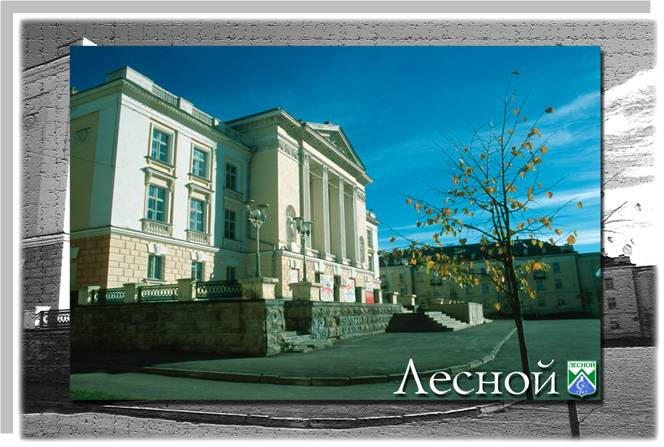
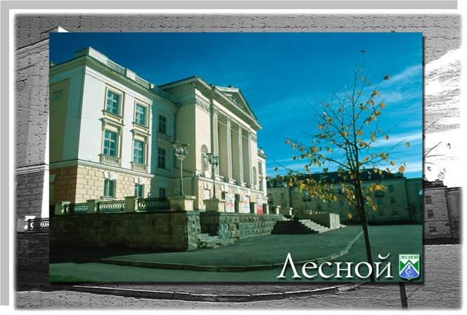

40-е годы
1946, май — Совет Министров СССР принял постановление «Об изготовлении опытной установки № 4» — для получения изотопов урана электромагнитным способом.
Сентябрь — на экспериментальной установке Лаборатории № 2 методом электромагнитной сепарации получен высокообогащенный уран-235.
1947 6 июня — принято постановление Совета Министров СССР об образовании завода электромагнитной сепарации.
19 июня — принято постановление СМ СССР, которым окончательно утверждается предложение о строительстве завода № 814 (будущий комбинат «Электрохимприбор») в Исовском районе Свердловской области.
Июль — Свердловский обком ВКП (б) и облисполком утвердили предложение спецкомиссии об отводе обследованного участка северо-западнее поселка Нижняя Тура для размещения на этой территории города и завода.
7 августа — приказом министра внутренних дел организовано Управление исправительно-трудового лагеря № 1418 МВД СССР —для строительства завода № 418 и жилого поселка при нем. Проложены первые просеки, построен первый барак.
1949 — организована медико-санитарная часть № 91 для обслуживания секретного населенного пункта.
- образовано подсобное хозяйство (совхоз «Таежный») отдела рабочего снабжения завода
- построен Клуб молодежи
- открыта первая средняя школа
1950, декабрь — завод выдал первую продукцию — изотоп урана.
 
